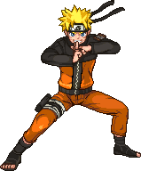

ナルト
ナルトは、忍者を目指す少年で、九尾の狐を封じられた体を持っています。最終的に火影となることを夢見ています。
特徴
- B技がどれも優秀
- 横Bヒット後の択の多さは全キャラトップ
- ※%稼ぎ 横B→下投げ→下スマor下B→DA、横B→空前→下強orDA…etc
- ※バースト 横B→下投げ下スマ、 横B→弱×2→螺旋手裏剣、 横B→上スマ…etc
- 上Bの分身置きが優秀(ダメージ判定、次の分身の威力が2倍)
- コンボ始動技の分身の判定が弱い
- 分身が通らない相手にはバ難になりやすい
- スマッシュのリーチが短い
- 復帰力が低い
- マジタカミ選手(日本) ARSEE選手(アメリカ)
強い点
弱い点
有名な使い手